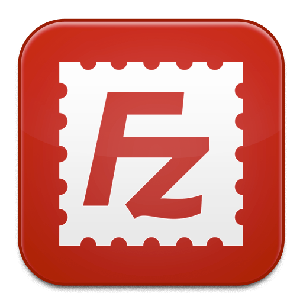
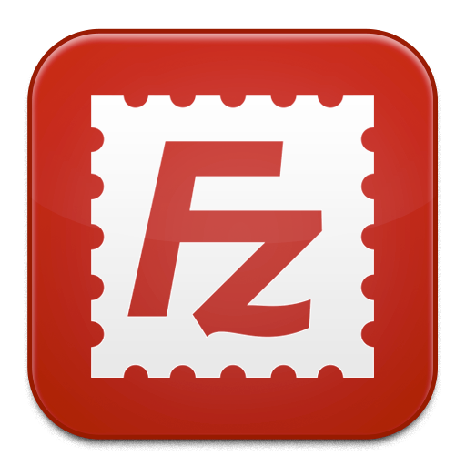

Cette première application est développée en HTML/PHP avec une architecture Modèle Vue Controller sous
l'éditeur PHPStorm.
La mission principale est de procéder au développement de la phase d'inscription à un hackathon.
On y retrouve ainsi 4 acteurs principaux : utilisateur, animateur, organisateur et participant.
Pour ce faire, nous disposons d'une application de départ et des accès aux serveurs Web et BDD.
Pour le serveur web, nous avions un accès FTP. Il s'agit donc d'un protocole utilisé pour transférer des fichiers
lourd d'un ordinateur à un serveur ou inversement.
Afin de prendre connaissance d'Hackat Web et d'en cerner les besoins, nous disposions d'une documentation complète de la solution. Parmi les ressources, on y trouvait l'explication du déroulement de l'étape d'inscription. Voir la documentation.
Un cahier des charges nous était attribué et contenait plusieurs scénarios utilisateurs avec un niveau de priorité et un état. Notre objectif dans un premier temps est d'analyser le besoin imposé par le prestataire informatique à travers ces fonctionnalités.
Afin de s'approprier un contexte professionnel, mon équipe et moi-même avons d'abord mis en place notre environnement de
développement. Nous avons récupéré le code initial fourni puis nous avons commencé à le versionner avec Framagit.
Ensuite, nous avons réfléchi à l'organisation générale pendant la première semaine de ce sprint.
Tout d'abord, nous avons analysé ce que chaque
users story pouvait représenter en matière de fonctionnalités et de difficultés. Suite à ça, nous avons effectué plusieurs schémas
pour comprendre l'organisation générale de l'application.
A chaque début de séance, nous discutions entre nous des fonctionnalités en cours et des difficultés rencontrées de la séance précédente.
Puis à chaque fin de séance, nous faisions un point sur notre avancé et prenions note des prochaines étapes pour le développement.
A la fin de ce Sprint, nous avons passé une petite épreuve orale afin de faire un compte rendu autour de la gestion de projet
et la gestion d'équipe.
Voir notre diaporama
La solution est établie sur un modèle d'architecture MVC inspirée des frameworks Laravel ou Symfony. Ce style d'architecture permet de bien organiser son code source. Il va nous aider à savoir quels fichiers créer, mais surtout à définir leur rôle. Le but de cette architecture est de séparer la logique du code en trois parties que l'on retrouve dans des fichiers distincts.

Voici une description des moyens établie concernant la sauvegarde du projet et le déroulement de sa continuité.
Framagit est l'interface utilisée pour le versionning du projet. C'est également le moyen qui permet d’assurer la continuité de celui-ci.
La base de données utilisée était PostgreSQL sous le logiciel DBeaver. Tous les membres du projet travaillaient sur cette même base de données.
Nous en disposions de deux différentes : une pour le développement en local et la seconde pour la version
de mise en production. Ainsi, aucune des deux bases n'est impactée par les changements qui peuvent être opérés.
Cependant, cette base de données sera la même pour chacune des applications d'Hachat'Innov.
Voici un aperçu de la toute première conception de la BDD pour Hackat'Web:
Afin de sauvegarder une trace de nos scripts de base de données, pour avons créé un fichier dans le code de l'application prévu à cet effet. Nos scripts était également stockées localement.
Dans ce projet, nous avons dû mettre en place un niveau d'habilitation afin d'octroyer des droits pour certains rôles utilisateur et à l'inverse d'en limiter pour d'autres.
Pour le déploiement de notre application, nous avons utilisé le logiciel Filezilla. Il va nous permettre de nous connecter
à notre serveur web via un accès FTP en renseignent l'hôte, l'identifiant, mot de passe et le port.
Le FTP est un protocole utilisé pour transférer des fichiers lourd d'un ordinateur à un serveur ou inversement.
Une fois connectés, nous pouvons accéder aux fichiers hebergés sur notre serveur et ceux qui se trouvent en local sur
notre machine. De cette manière, nous avons transféré les fichiers du site en local sur le serveur et après cela, le site
était en ligne.
Afin de suivre l'avancée de chacun, nos récits utilisateurs étaient organisés dans les issues de Framagit.
Pour chaque ticket, un développeur de l'équipe y était assigné, permettant de communiquer
aux autres membres et en temps réel, l'avancée de la fonctionnalité.
Afin de mieux cerner visuellement les actions d'un utilisateur, visiteur, animateur et organisateur, nous avons choisis de créer des schémas UML quant à l'étape d'inscription au hackathon. Passer par cette étape n'est pas obligatoire mais elle est néanmoins très intéressante car elle permet d'avoir une vue d'ensemble des actions pour chacun des rôles.
Accueil
Formulaire de modification des informations
Formulaire de renseignements (utilisateur)
L'animateur reçoit une notification d'un administrateur

Les messages envoyés de l'utilisateur
Détails d'un hackathon
Demande d'inscription
Nous avons établi une documentation utilisateur afin de guider la personne qui va aller sur le site pour la première fois.
Les élèves de première année de BTS SIO étaient nos utilisateurs et ont utilisé notre documentation utilisateur.
Cela a permis d'avoir un retour constructif sur la navigation utilisateur et la compréhension des fonctionnalités.
Suite à ça, nous avons pris en compte ces changements dans une perspective d'amélioration.
Voir la documentation
Voir le compte rendu utilisateur
Notre impression de ce premier Sprint est plutôt bonne et encourageante. Cependant, des difficultés ont commencé à se développer
concernant la base de données. En effet, nous avions eu du mal à comprendre les enjeux et impacts que cela allait avoir sur les
autres applications.
Au bout de ce premier Sprint, nous avons donc pu faire un point en équipe sur le déroulement. Après avoir discuté, nous avons établi
une première Retrospective pour laquelle nous nous appuierons lors du prochain Sprint.

 

PHP Storm
PHP
DBeaver
PostgreSQL
Framagit
Filezilla